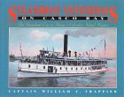

Recommended Books
Maine info
Summer Island: Penobscot Country
by Eliot Porter
(UNM-Los Alamos Library Southwest Collection)
Steamboat Yesterdays on Casco Bay**
by William J. Frappier

Toronto, Canada, 1993 Hardcover - 196 pages (October 1993)
Stoddart Pub; ISBN: 1550460862 ; Dimensions (in inches): 0.71 x 8.78 x 11.38
Editorial Review
The Rhumb Line -- Maine Maritime Museum
"The first century of steamboating on Casco Bay comes alive in the first comprehensive and definitive account of the steamboat era in the Calendar Islands region. Captain Frappier's work is a tribute to the steamers and the people of the islands, the lifeblood of Casco Bay." --This text refers to the Hardcover edition.
Roadside New England
by Harding
Along the Maine Coast -
by Katharine Knowles, Thea Wheelwright

Hardcover (January 1982)
Crown Pub; ISBN: 0517141604
Barre Publishers. MA. 1967. Second Ptg. Textblock is clean and tight. Text by Thea Wheelwright. An evocation of the beauty of the long rocky beaches in words and b/w photos.
DOWN EAST
by SARGENT F. COLLIER
1953, RIVERSIDE PRESS. 148pp.
DOWNEAST cover
Ever New England, The Coast of Maine, Small House in the Sun, The New
England Image**
by Chamberlain
One Man's World, Popham Beach, Maine
by James E. Perkins
131 pages; 1st ed. edition
Bond Wheelright Co.;
ISBN: 0870271423;
FOUND:
"One man's world, Popham Beach, Maine
by Jane Stevens
131 pages
Publisher: Bond Wheelright Co.;
ISBN: 0870271415; 1st ed. edition"
Downeast Books Steamboat Albums
(4)on different regions of Maine.
By ?
Wake of the Coasters
by John F. Leavitt
Paperback:
Publisher: Mystic Seaport Museum Pubns;
ISBN: 091337234X;
2nd edition (October 1970)
This is a charming book about life aboard American coasting schooners. Focusing almost entirely on the Maine coast, this book covers a wide
variety of topics; from the gear of the vessels, the general types of schooner, the use of the gear and coaster seamanship, as well as a facinating
collection of stories about the gallant schooners and the larger than life men who sailed them, like "Old Zeb" Tilton and the Alice S. Wentworth.
The author worked on these vessels in their dotage, and his love for these old ships permeates every page. A thoroughly rousting read!
This was New England
by Sanders
A Day's Work, A Sampler of Historic Maine Photographs, 1860-1920, volumes I and II
William Henry Bunting (editor),
both still in print and possibly the best of the bunch.
For a look at what the natural colors of the Maine coast are:
Maine, the Pine Tree State
by Harris
still looking for information.
Alternate books
Click on link to see cover, then use browser 'back' key
Auburn, ME-Photo History Book of a Maine City,
Farmington,Wilton Sugarloaf ME-Photo History
Around Hallowell Maine -by Bob Briggs ,1996 Arcadia Publishing
Around Wiscasset Maine
-by Jim Harnedy ,1996 Arcadia Publishing
Vessels of Camden Maine-Ships & Boats
by Barbara Dyer 1998 Arcadia Publishing
Along the Kennebec
- by Gay M. Grant 1995 Arcadia Publishing
Along the Upper Kennebec Valley by Jon Hall 1997 Arcadia Publishing
ME Vol II-Photo History
I have these books and they are all worth
having. Arcadia also just published a marvelous book that is a must
have called ...Maine.... It is a compilation of the best photos from all their other Arcadia Publishing Maine books. There is also a book of postcards of the coast of Maine in the series. Someone on Ebay sells all of the
Arcadia softcovers for $9.99 and few bid on them.
Boilerplate books
The Maine Two-Footers
By Linwood W. Moody
1959
Howell-North Press
Berkeley, California
Library of Congress Number 59-12774
Two Feet between the Rails
Volume I - The Early Years
By Robert C. Jones
1979
Sundance Publications Limited,
Silverton, Colorado
ISBN 0-913582-17-4
Two Feet between the Rails
Volume II - The Mature Years
By Robert C. Jones
1980
Sundance Publications Limited,
Silverton, Colorado
ISBN 0-913582-18-2
Two Feet to the Lakes
The Bridgton & Saco River Railroad
By Robert C. Jones
1993
Pacific Fast Mail
Edmonds, Washington
ISBN 0-915713-26-8
Library of Congress Number 92-061542
Two Feet to the Quarries
The Monson Railroad
By Robert C. Jones
1998
Evergreen Press
Burlington, Vermont
ISBN 0-9667264-0-5
Library of Congress Number 98-87962
Two Feet to Togus
The Kenebec Central Railroad
By Robert C. Jones
1999
Evergreen Press
Burlington, Vermont
ISBN 0-9667264-1-3
Library of Congress Number 99-68177
Two Feet to Tidewater
The Wiscasset, Waterville & Farmington Railway
By Robert C. Jones and David L. Register
1987
Pruett Publishing Company,
Bolder Colorado
ISBN 0-87198-729-4
Structures of the Maine Two-Footers
Volume I : The Sandy River and Rangeley Lakes and the Wiscasset, Waterville and Farmington Railways
By Peter S. Barney
A& M Publishing 1988
Library of Congress Number 88-071314
Structures of the Maine Two-Footers
Volume II : The Bridgton and Saco River, the Kennebec Central and Monson Railroad.
By Peter S. Barney
A& M Publishing 1988
Library of Congress Number 88-071314 (yes, same #)
Industries and Freight Train Operations of the Sandy River and Rangeley Lakes Railroad
Volume 6
By Peter S. Barney
A& M Publishing 1993
Library of Congress Number 88-071314 (yes, same #)
Industries and Operations of the Maine Two Foot Gauge Railroads
Volume 8 (VIII) Operations on the B&SR, Kennebec Central, WW&F and Monson
By Peter S. Barney
A& M Publishing 1997
Library of Congress Number 88-071314 (yes, same #)
Handcars, Railcars and Railbuses of the Sandy River and Rangeley Lakes Railroad
By Peter S. Barney
Drawings by Wesley J. Ewell
A& M Publishing 1990
Library of Congress Number 90-80953
The Wiscasset, Waterville & Farmington Railway: A Technical & Pictorial Review
By Peter S. Barney
A& M Publishing 1986
Library of Congress Number 86-62287
Narrow Guage in the Sheepscot Valley
A comprehensive Guide to the Wiscasset, Waterville & Farmington Railway
Volume I - Wiscasset to Head Tide
By Chris McChesney, Jerry DeVos, Gary Kohler
Published by M2FQ Publications 2001
J&R Printing
HOME to TI